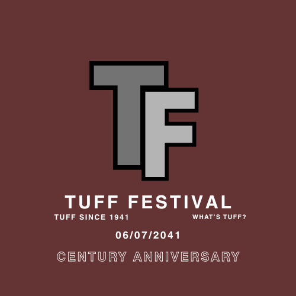

| Platform | Our handle, and what we use it for. |
|---|---|
Facebook |
"The Tuff Festival" Tuff Festival utilizes X to engage in real-time conversations with our audience and share instant updates. This platform allows us to announce exciting news, such as lineup reveals, ticket sales, and festival highlights. It serves as a space where fans can interact with us and each other, creating a vibrant community around our shared love for music and celebration. Through quick tweets and responsive engagement, we're able to keep the excitement alive and foster a sense of immediacy leading up to the festival. |
Instagram |
"TuffFestivalVenues" On Instagram, Tuff Festival showcases the vibrant visual experience of our event. With stunning photos and engaging stories, we offer a glimpse into the energetic atmosphere, featuring artists, behind-the-scenes moments, and the joy of festival-goers. Our Instagram feed is designed to inspire and motivate followers to join us in celebrating 100 years of music and community. Through interactive features like polls and Q&A sessions, we also engage our audience, encouraging them to share their own festival moments and memories. |
X |
"@thetufffestivalcrew" Facebook serves as a comprehensive hub for Tuff Festival, offering detailed information and fostering community interactions. Here, we share event updates, ticketing details, and more extensive content such as video highlights from previous festivals and artist interviews. Our Facebook group creates a space for fans to connect, share their anticipation, and discuss their favorite acts. With events pinned for easy access, it helps ensure our audience stays informed about everything Tuff Festival has to offer as we celebrate this milestone year together. |